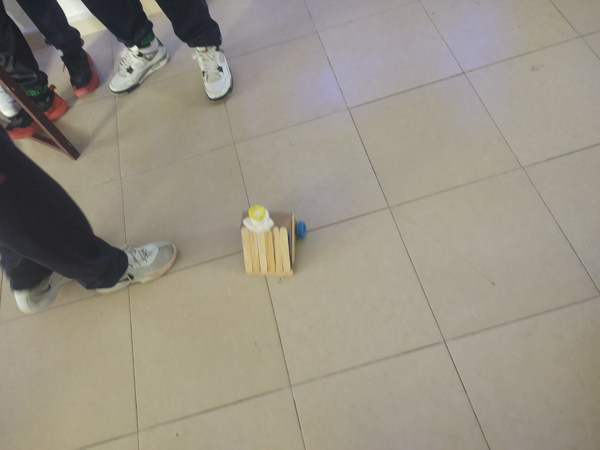
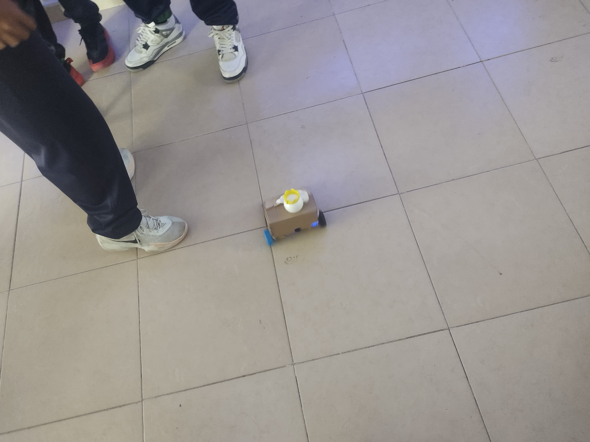

La tecnología y la innovación a través de la robótica
La robótica es una rama de la tecnología que combina conocimientos de programación, electrónica, mecánica e inteligencia artificial para diseñar y construir robots. Estos proyectos permiten desarrollar máquinas capaces de realizar diferentes actividades y ayudar a las personas.
Se utilizaron materiales como los microprocesadores, cables conectores y estaño
Es un proyecto realizsdo por el compañero carlo el cual puede avanzar y girar


A continuación se presenta un video relacionado con la creación y funcionamiento de los robots.
La creación de robots representa un avance importante para la tecnología. Estos proyectos permiten aplicar conocimientos de programación, electrónica y mecánica para resolver problemas y facilitar diferentes actividades de la vida cotidiana.